输入关键词筛选，清空后显示全部。
1一分钟上手
站点是网页应用，手机与电脑均可打开，添加到桌面后近似独立应用。
打开方式
- 浏览器输入站点地址，或在班群扫描二维码进入。
- 手机浏览器菜单中选择「添加到主屏幕」，下次从桌面图标直接打开。
- 微信内可直接打开；离线缓存、文件上传等功能在系统浏览器中更稳定。
页面结构
页面分三部分：顶部为站点标题与深浅色按钮，左侧为功能侧边栏，中间为内容区。手机上点左上角圆形按钮展开侧边栏。
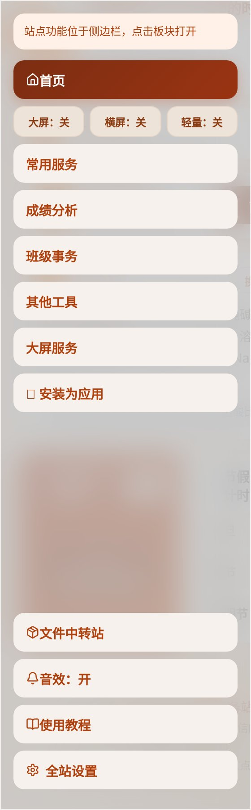
首次进入会发生什么
系统会显示一段新手导览，用一个高亮光圈依次指出每个区块的位置，按「下一步」走完即可。导览分两轮：首页一轮，之后每进入一个板块，该板块第一次打开时各有一轮。
登录与否的区别
2首页
从上到下为班级岛、班级公告、今日班级签、每日日报、每日一言、学习卡片、倒计时，最后是侧边栏入口。
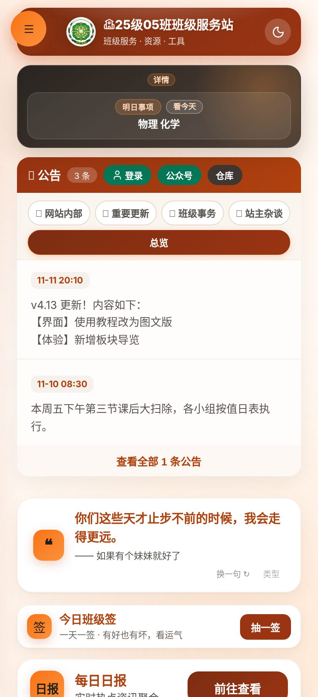
班级岛 第一屏
位置：页面最上方横幅
显示当日课程、当前教学周与天气。点击横幅展开完整课表，再点一次收起。
周次按开学日所在周的周一起算，与教室张贴的周次一致。左侧出现「今晚有课」之类的标签时，表示当天有额外安排。
班级公告 第二块
位置：班级岛下方
班级通知、活动安排与临时调整集中发布于此。标题右侧的数字为未读条数，展开该条即视为已读。
重要公告置顶显示；分类标签分为「重要更新」与「班级事务」两类，可按标签筛选。
今日班级签 第三块
位置：公告下方卡片
每天可抽一次签，点右侧「抽一签」查看今日签文。签文分吉签、凡签、平签三类，纯属娱乐。
抽过之后按钮变为「看今日签」，次日 0 点刷新，可以重新抽。
每日日报 第四块
位置：班级签下方
每天一条的班级日报入口，内容由管理员在后台维护。未配置内容时该区块不显示，首页会直接跳过。
每日一言 第五块
位置：每日日报下方
随机展示一句短语，每天自动更换。点整条卡片可换一句，点「类型」可以只保留想看的几类内容。
学习卡片 第六块
位置：每日一言下方
自习计时与学习时长统计的入口，记录每次自习的起止时间与累计时长。当前版本暂未启用，因此首页不显示这一块。
倒计时 第七块
位置：学习卡片下方
显示距离重要考试与节日的剩余天数，例如「元旦 51 天」。目标日期由管理员在后台维护，同学看到的是统一结果，无法自行修改。
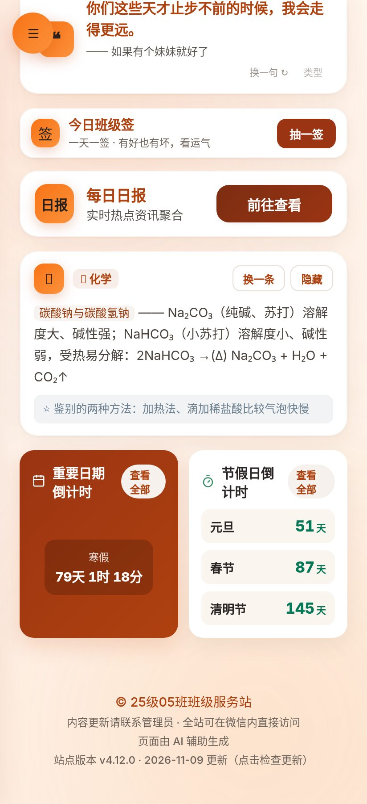
侧边栏 首页收尾
位置：手机左上角圆形按钮；电脑为左侧常驻栏
点此展开侧边栏。常用服务、成绩分析、班级事务、其他工具、大屏服务五个板块，以及大屏、横屏、轻量三个显示开关，都在里面。
首页导览走到这一步即结束；此后进入某个板块时，会再单独讲一遍该板块。
3常用服务
在侧边栏点「常用服务」进入。卡片默认收起，只显示标题；点标题展开说明与按钮。
点歌平台
位置：常用服务第一张卡片
在站外 VoiceHub 运行，点「前往入口」会跳到另一个网站，需要单独登录：账号为学号，初始密码为出生日期。
服务器资源有限，跳转后可能要等几秒才打得开。微信内若提示无法访问，按页面提示改用系统浏览器。
作业查看
位置：常用服务第二张卡片
作业在站内查看，不跳转其他网站。展开后有两个按钮：「查看当前作业」按今天的日期自动定位所属期次，「历史作业」按时段检索往期。
大屏模式下的作业看板仅管理员可打开，同学通过这张卡片查看即可。
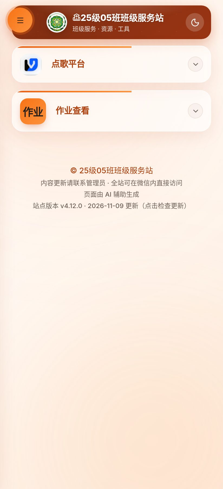
4作业查看
点「查看当前作业」后弹出的窗口，作业按科目分组，逐条勾选即记录完成。
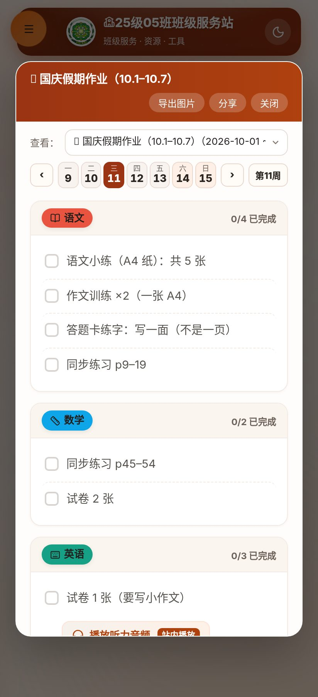
期次与日期
位置：弹窗上部下拉框与日期条
上方「查看」下拉框切换作业期次，例如「国庆假期作业」。下方日期条按周排列，带小圆点的日期表示当天有作业，点击该日期即跳到对应期次。
日期条右侧显示当前教学周，点左右箭头可翻到上一周或下一周。
作业清单
位置：弹窗主体
按语文、数学、英语等科目分组，每条作业一行，右侧显示该科目已完成的条数，例如「0 / 4 已完成」。
需要看具体要求的作业（例如「共 5 张」），展开条目可以看详细说明。
勾选与导出
位置：每条作业左侧方框；弹窗右上角按钮
点方框打勾即记录完成，右上角的完成计数同步变化。登录后勾选结果保存到云端，换设备仍然保留。
「导出图片」把整份作业画成一张长图，方便发到班群；「分享」生成图片并调起系统分享面板。
5成绩分析
在侧边栏点「成绩分析」进入。这一块需要登录才能查看具体成绩。
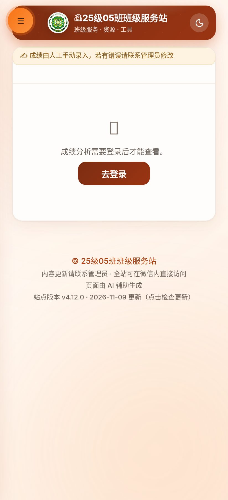
成绩来源
位置：页面顶部说明条
成绩由管理员手动录入。分数、排名与实际情况有出入时，联系管理员核对，页面上无法自行修改。
选择考试
位置：说明条下方下拉框
下拉切换考试场次，例如月考、期中、期末。切换后成绩单、排名与图表一起更新。
成绩内容 需登录
位置：考试选择下方
未登录时显示登录提示，点「去登录」完成登录后回到本页即可查看。登录后出现三个页签：
- 全班成绩单：按总分或单科排序，显示各科分数、总分与班级排名。
- 我的画像：只看本人，展示各科强弱项与历次考试的变化趋势。
- 成绩对比：任选两人、同一场考试，逐科比较分差。
6大屏模式
面向教室电脑与投影，把全部功能铺满一屏。在侧边栏点「大屏：关」切换为开启。
进入与退出
点侧边栏的「大屏：关」即进入，按钮文字变为「大屏：开」。再点一次回到普通模式。大屏模式会记住状态，同一台设备下次打开仍是上次的样子。
横屏与轻量两个开关与它并排，作用分别是把页面旋转成横向、关闭模糊与动画以提升低配设备流畅度。
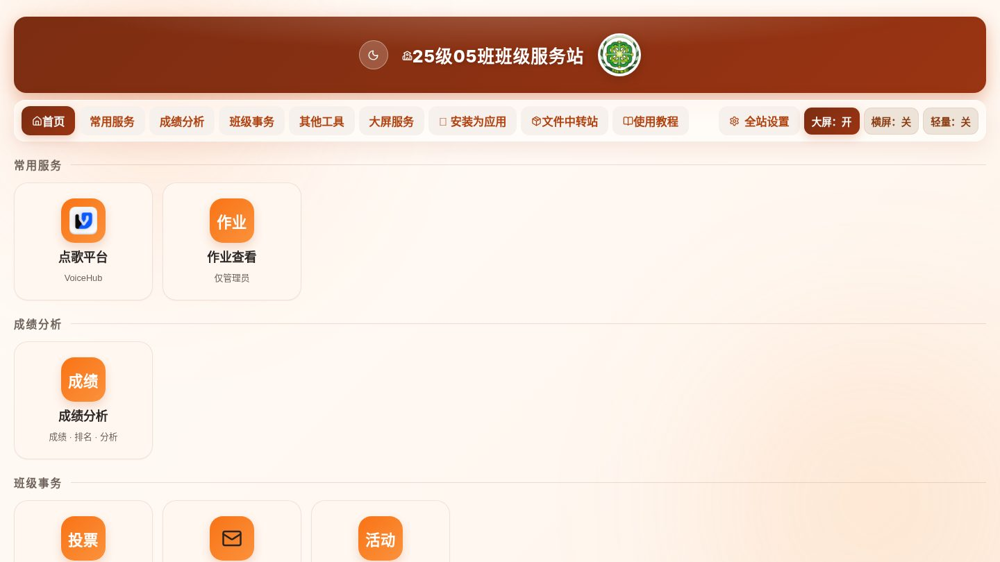
顶部导航
位置：大屏界面第二行
大屏模式下侧边栏变为横向导航条：首页、常用服务、成绩分析、班级事务、其他工具、大屏服务、安装为应用，右侧是文件中转站、使用教程、全站设置与三个显示开关。
功能分组
位置：导航条下方
功能按板块分组排列，每组一个标题。磁贴即入口，标题下方的小字说明用途，例如「点歌平台 · VoiceHub」。
进入功能
位置：任意磁贴
点击磁贴进入对应功能，页面顶部出现「← 返回大屏」。作业看板仅管理员可打开，其他同学点了会提示无权限。
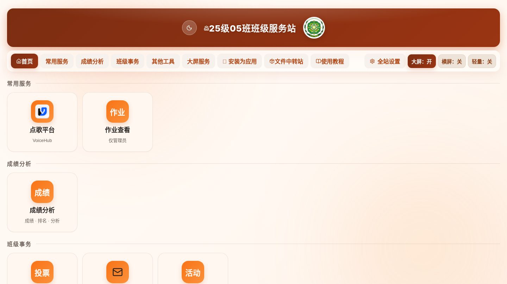
7全屏时钟
在侧边栏「其他工具」中找到「全屏时钟」，适合自习课投到教室屏幕。
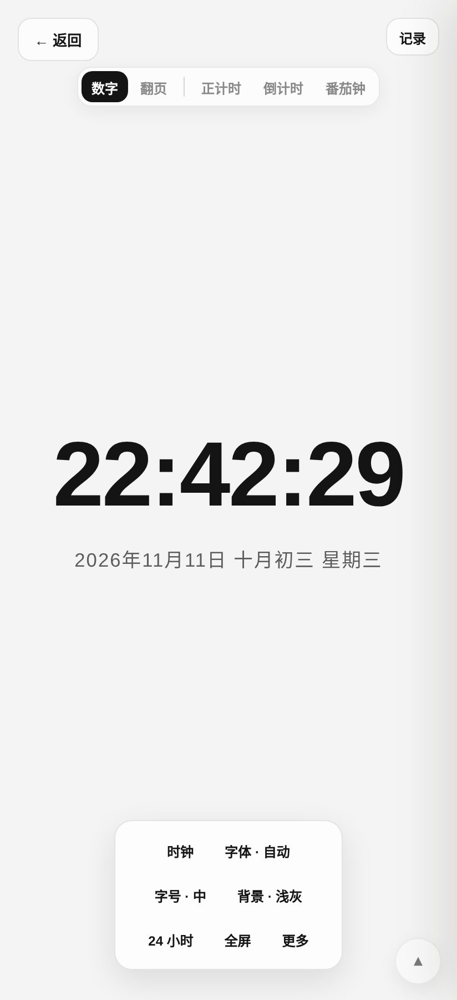
显示内容
显示时间、日期、星期与当前教学周。数字与翻页两种样式可切换，翻页样式还可以隐藏秒数，减少屏幕闪烁。
自习计时
可设定倒计时或正计时，时间到有提示音。切到别的页面再回来，计时继续，不影响已经过去的时间。
周次口径
与班级岛一致：第 1 周从开学日所在周的周一开始计算，所以屏幕上显示的周次与教室张贴的一致。
8侧边栏与设置
显示类设置都收在「全站设置」里，改完立即生效，只影响当前设备。
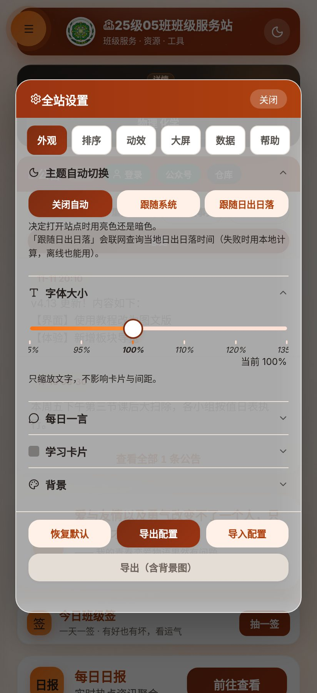
六个页签
位置：弹窗顶部
外观、排序、动效、大屏、数据、帮助。点页签切换，改动即时保存，不需要点确定。
外观
位置：第一个页签
深浅色、背景图、字体大小与圆角风格。深浅色可选跟随系统，日出日落前后自动切换。
排序
位置：第二个页签
调整首页各区块的先后顺序，用上下箭头移动。也可以把暂时不看的区块隐藏，首页会直接跳过。
大屏
位置：第四个页签
调整大屏作业看板右栏的宽度、顶栏预留的空白高度，并开关右栏的七张卡片。这几项只保存在当前设备，不影响别人。
数据
位置：第五个页签
查看云端同步了哪些数据，可逐条删除或清空。底部「恢复默认」会清空本机全部自定义设置，操作前先导出备份。
帮助
位置：第六个页签
显示八段导览各自的完成情况。「重看新手导览」从首页第一步重新开始；「重置导览记录」清空记录，下次进入时重新播放。
9文件中转站
在侧边栏底部点「文件中转站」。用于在手机与教室电脑之间传文件，不必登录网盘。
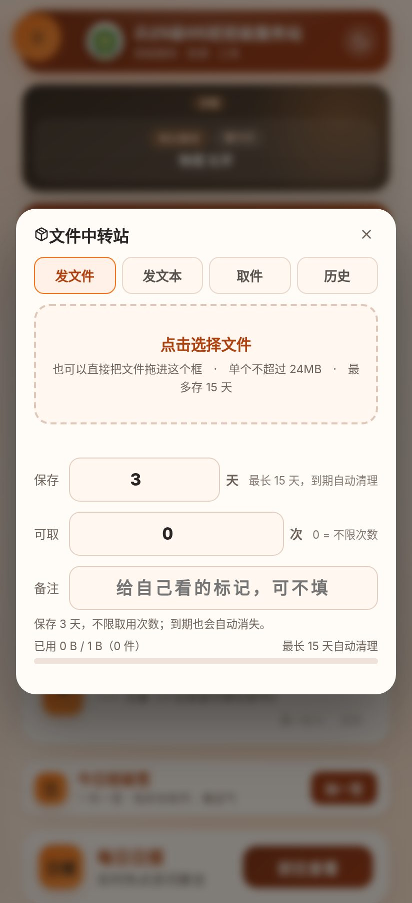
四种用途
位置：弹窗顶部
- 发文件：上传任意文件，生成取件码。
- 发文本：传一段文字，适合发链接或账号。
- 取件：输入取件码下载别人发的文件。
- 历史：查看自己发过的记录，可提前删除。
上传
位置：发文件页签内
点击选择文件，也可以直接把文件拖进虚线框。单个文件不超过 24MB，最多保存 15 天，到期自动清理。
取件与分享
位置：上传完成后的结果页
上传成功会生成一串取件码，点旁边的复制按钮发给同学。教室里在另一台设备输入这串码即可下载。
10登录与账号
点首页顶部的账号按钮打开登录窗口。账号由管理员统一创建，不支持自行注册。
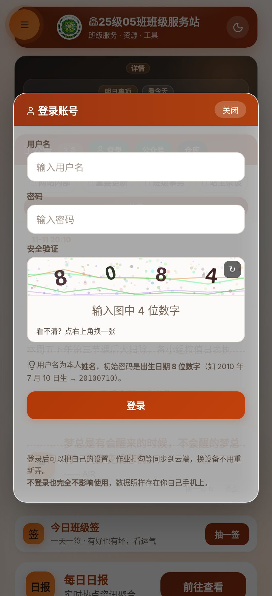
用户名
位置：第一行输入框
填写本人姓名，须与班级名单一致，不要加空格或标点。
密码
位置：第二行输入框
初始密码为出生日期 8 位数字，例如 2010 年 7 月 10 日对应 20100710。首次登录后建议在个人资料中修改。
安全验证
位置：第三行
按图填写数字。图像看不清时，点右上角刷新按钮换一张。后台关掉验证时这一行不会出现。
登录
位置：窗口底部按钮
确认三项填写无误后点击登录。登录失败会提示具体原因，密码错误与账号不存在的提示不同，按提示处理即可。
忘记密码联系管理员重置；登录状态会保存在本机，换设备需要重新登录。
11常见问题
页面内容没有更新
站点会缓存页面以便离线打开。看到「有新版本」提示时点「立即更新」；没有提示时，下拉刷新一次，或在浏览器中清除该站点数据后重新打开。
提示无法打开或一直白屏
微信内置浏览器对部分功能支持有限，改用系统浏览器打开。仍然白屏时，检查网络是否正常，或在设置中关闭轻量模式后再试。
断网时能否使用
首页、教程页、大屏与时钟已缓存到本机，断网可以打开。公告、作业、成绩等云端内容需要联网，断网时显示上次缓存的内容。
换手机后设置丢失
外观、排序、大屏偏好只存在当前设备，换设备需要重新设置。登录后作业勾选与点歌记录跟账号走，不受影响。
周次或日期显示不正确
周次按开学日所在周的周一起算。若与教室张贴的周次相差一周，多为开学日期设置有误，联系管理员核对后台的学期起始日。
成绩或作业内容有误
这两类内容由管理员录入，前台只能查看与勾选，无法修改。发现错误请直接联系管理员或课代表。